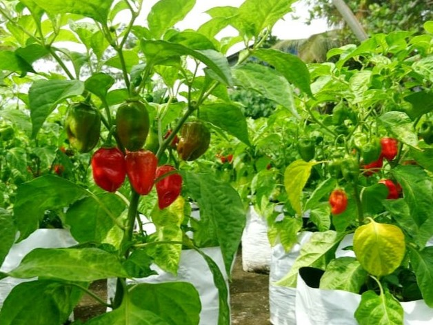
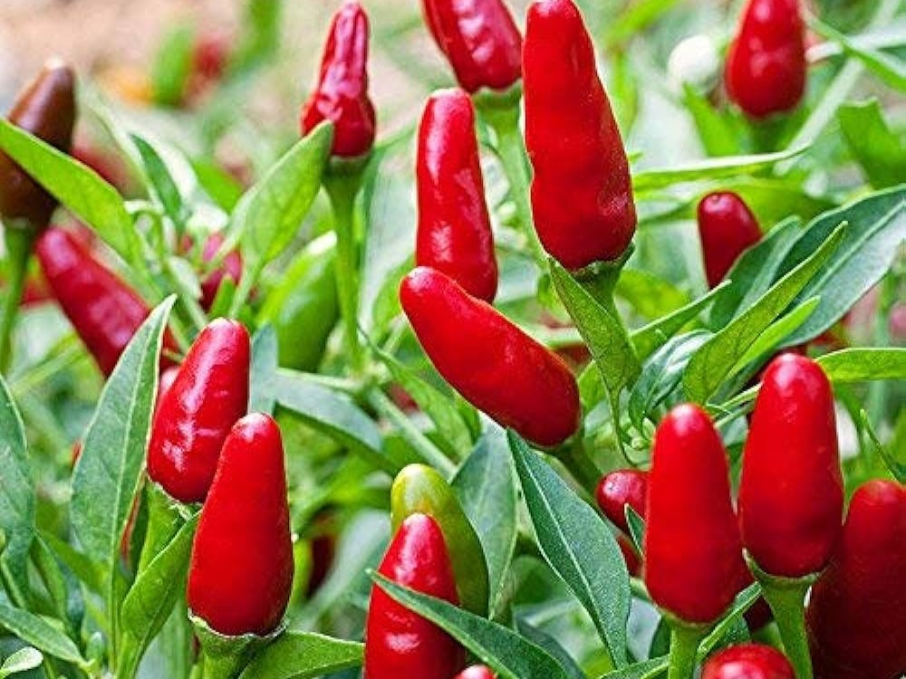
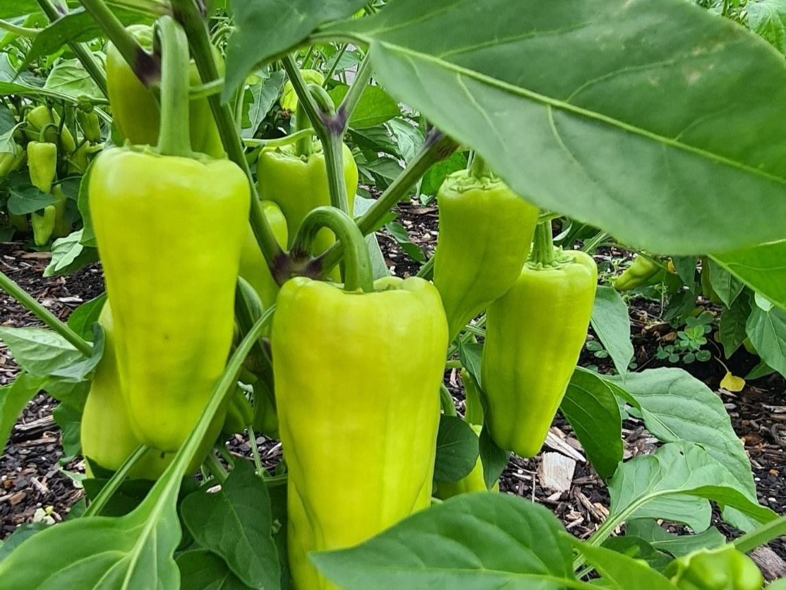
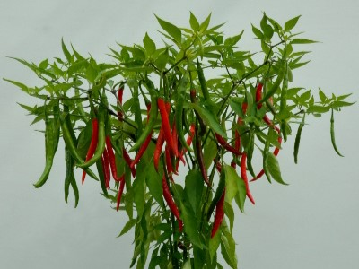
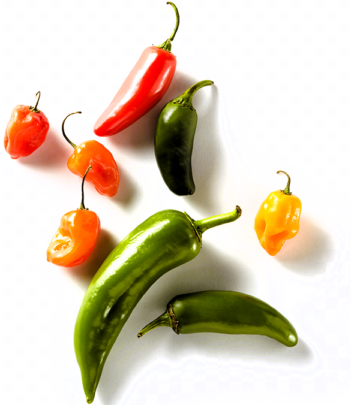

Nai Miris (Capsicum chinense)
Also known as the bird's eye chili, Nai Miris is a small but potent chili that packs a punch. It is commonly used in Sri Lankan cooking to add intense heat to curries, sambols, and chutneys.

Kanthari (Capsicum frutescens)
The Kanthari chili is similar in heat to the bird's eye chili but has a unique fruity flavor profile. It is often used in salads, pickles, and seafood dishes to add a spicy kick with a hint of tanginess.

Goraka Miris/Maalu Miris(Capsicum annuum)
Goraka Miris, or dried chili's, are a staple in Sri Lankan kitchens. They are used in powdered form to season dishes or whole in curries and stews, imparting a deep, smoky flavor along with heat.

Indian Jwala (Capsicum annuum)
This chili pepper variety is popular for its medium heat level and bright green color. It is commonly used in Sri Lankan cuisine to make fiery hot sauces and relishes, adding a vibrant hue and intense flavor to dishes.


Bell pepper
It is a delicious ingredient enjoyed by people all over the world. Although they are not known for their extreme heat like nai chillies, they have a unique combination of sweetness, crunch and vibrant colors that make them a welcome addition to various dishes.